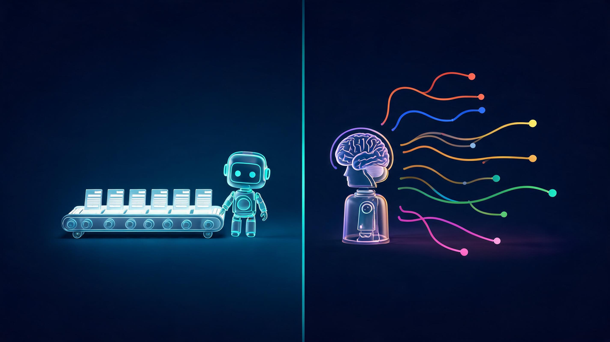
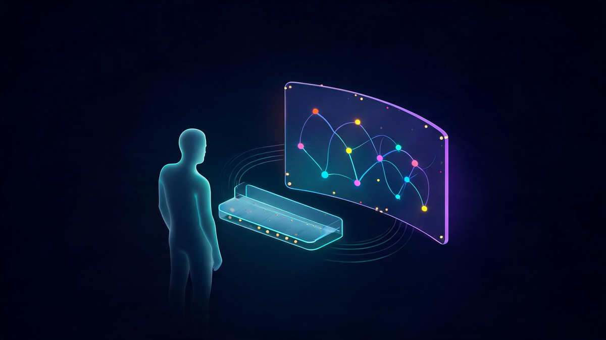

Intelligent Automation in 2026: How It Works + Real Examples

📑 Table of Contents
- What Is Intelligent Automation?
- The 3 Components: AI + BPM + RPA
- Intelligent Automation vs RPA
- An Example of an Intelligent Automation Solution
- Where Intelligent Automation Works Best
- The Numbers: Market Size and Proven Benefits
- How to Start: The 5-Step Plan
- The Agentic Era: Where IA Goes Next
- Frequently Asked Questions
Intelligent automation is having a very expensive moment: the market reached roughly $18.5 billion in 2026 and is projected to more than double by 2030.[9] Yet the search results around it are a wall of vendor glossaries repeating the same three letters. This guide strips it back — what IA actually is, how its three components fit together, where it genuinely works (with named examples), the honest numbers, and a 5-step plan to start without burning a quarter's budget.
Key Takeaways
- Intelligent automation (IA) = AI + business process management (BPM) + robotic process automation (RPA) — decision-making layered on top of workflow automation and bot execution.[1]
- The difference vs plain RPA: RPA follows fixed rules and breaks on variation; IA reads documents, handles exceptions and improves from data.[2]
- Invoice processing, insurance claims and customer support are the three most proven example solutions in 2026.
- The numbers justify the hype: process-cost reductions of 25–40%[8] and 76% of decision-makers reporting customer-experience gains.[4]
- Start with process discovery, pilot one workflow with baselined metrics, scale only what proves itself — the 5-step plan below.
What Is Intelligent Automation?
Intelligent automation (IA) — sometimes called cognitive automation or intelligent process automation — is the use of AI, business process management and robotic process automation together to automate complex work and streamline decision-making across an organization.[1] The defining trait: it learns as it operates. Where classic automation executes the same steps forever, IA systems improve with every processed document and resolved ticket — the software you deploy in month six works better than the one from week one.[4]
The practical version: IA combines natural language processing to read unstructured text, machine learning to spot patterns and predict outcomes, and computer vision with OCR to extract data from documents.[2] Layer that intelligence onto automated workflows and you get systems that don't just follow rules — they handle the messy, exception-filled reality that rule-based automation chokes on.
The 3 Components: AI + BPM + RPA
IBM's canonical framing — echoed across the industry — breaks IA into three integrated parts:[1]
1. Artificial intelligence — the decision engine. Machine learning analyzes structured and unstructured data, builds a knowledge base, and formulates predictions. This is what makes the automation "intelligent": pattern recognition, document understanding, and judgment-like outputs on routine decisions.
2. Business process management — the orchestration layer. BPM automates and coordinates workflows end-to-end, providing the agility and consistency that turns isolated smart tasks into a complete process. It's the connective tissue — and the reason IA projects are really process projects in disguise.
3. Robotic process automation — the hands. RPA bots execute the back-office mechanics: extracting data, filling forms, copying between systems. They complement AI by acting on its insights at machine speed.[1]
Intelligent Automation vs RPA
The most common buyer confusion, settled in one table:
| Dimension | Traditional RPA | Intelligent Automation |
|---|---|---|
| How it works | Fixed rules; mimics clicks and keystrokes | AI reads, decides and adapts; bots execute |
| Handles variation | Breaks when format or flow changes | Reads unstructured data; self-corrects |
| Documents | Needs rigid, structured templates | Any format via OCR + NLP + ML[2] |
| Learning | None — script updates are manual | Improves continuously from data |
| Best for | Stable, high-volume, simple tasks | Complex, exception-heavy processes |
| Relationship | RPA is one component inside intelligent automation | |

The strategic takeaway: RPA isn't the competitor — it's the foundation. Most successful IA programs started by automating stable tasks with RPA, then layered AI where variation and judgment entered the picture.[2]
An Example of an Intelligent Automation Solution
Definitions are cheap; here are the three workflows where IA is genuinely proven, with the mechanism spelled out:
Example 1 — Invoice processing (finance). The classic end-to-end IA solution: intelligent capture extracts vendor, amount and line items from any invoice format (scan, PDF, email body) using OCR and ML; validation logic matches each invoice against purchase orders; RPA enters approved data into the ERP and schedules payment; only genuine exceptions — price mismatches, missing POs — route to a human. Accuracy compounds because the ML model learns from every correction.[4]
Example 2 — Insurance claims (life sciences/insurance). IA reads claim documents, cross-checks policy terms, calculates estimates and flags compliance-sensitive cases for review — the exact pattern IBM cites for insurers automating payments and rate estimation.[1] The measurable win: straight-through processing of routine claims while adjusters focus on the complex 20%.
Example 3 — Customer support (retail/services). NLP-powered assistants resolve routine queries 24/7, auto-update appointment forms, send reminders and trigger real-time order updates — with customer data feeding continuous personalization.[2] The IA distinction: the system learns which resolutions actually satisfy customers, not just which scripts get deployed.
Where Intelligent Automation Works Best
Industry adoption clusters around four patterns:[1][3]
Automotive & manufacturing: demand-responsive production adjustment, defect discovery, and collaborative robots on physically demanding assembly steps — Volkswagen's engine plant in Germany is the cited reference case.[1]
Healthcare & life sciences: precise equipment calibration, regulated drug-production checks, and patient-facing scheduling — industries where error-cost makes IA's consistency premium worth paying.[1]
Finance & insurance: fraud detection on transaction patterns, claims automation, compliance reporting and rate calculation — the highest-volume document-processing verticals.[1][3]
Retail & commerce: inventory forecasting, supplier coordination and the customer-experience layer — Shopify frames IA as the competitive lever for commerce teams drowning in repetitive ops work.[8]
The Numbers: Market Size and Proven Benefits
Market analysts converge on strong growth with methodological spread: Grand View Research values intelligent process automation at $18.5B in 2026, projected to $44.7B by 2030 (22.6% CAGR); other firms place 2026 between $12.6B and $22.8B depending on scope.[9] The direction is unambiguous even where the baselines differ.
The outcome data is more actionable than the market sizing:
| Measured Outcome | Number | Source |
|---|---|---|
| Business-process cost reduction | 25–40% average | Deloitte study, via Shopify[8] |
| Customer-experience improvement | 76% of decision-makers | Forrester/Hyland study[4] |
| Employee-productivity increase | 63% | Forrester/Hyland study[4] |
| Innovation increase | 57% | Forrester/Hyland study[4] |
| AI content-automation adoption by 2026 | 81% expected | Forrester/Hyland study[4] |
Read those together and the pattern is clear: the cost case is real but the experience case is bigger — which is why the mature conversation in 2026 is about where to apply IA, not whether.
How to Start: The 5-Step Plan
- Discover — map before you automate. Run process discovery on current workflows; identify rule-based, high-volume, exception-prone tasks. Automating a broken process just breaks it faster.[8]
- Select — one workflow, clear metrics. Pick a single process with measurable cost today (invoices, claims intake, ticket triage). The first win funds the program's credibility.
- Pilot — contained and real. Run IA on live data inside a bounded scope with humans reviewing exceptions. Vendor demos use clean data; your pilot shouldn't pretend yours is.
- Measure — baseline vs after. Compare processing time, error rate, exception percentage and cost per transaction against the pre-pilot baseline. Numbers or it didn't happen.
- Scale — with governance. Expand to adjacent workflows, add monitoring, and define human-review loops for decision-heavy steps. This is also where our AI agent security checklist becomes relevant — automation that acts needs guardrails.
The Agentic Era: Where IA Goes Next
The 2026 frontier: intelligent automation is growing agency. Classic IA executes predefined processes with learned intelligence; the new generation — AI agents — takes goals instead of tasks, plans multi-step execution and uses tools autonomously.[5] The control-room picture looks like this:

The through-line for buyers: today's IA platform choice is tomorrow's agent foundation. Vendors that document their AI layer cleanly (model choice, data flow, review controls) are the ones whose agentic upgrades you'll actually trust. Our deep dives: AI agent platforms compared, enterprise agent deployment, and how AI differs from the machine learning inside it.
Frequently Asked Questions
What is intelligent automation?
Intelligent automation (IA) is the combination of artificial intelligence, business process management and robotic process automation into systems that automate complex tasks and improve themselves over time — automation that learns from data instead of only following fixed rules.
What is intelligent process automation?
Intelligent process automation (IPA) is a near-synonym for intelligent automation — it emphasizes applying AI capabilities such as machine learning, natural language processing and computer vision to automate end-to-end business processes rather than single tasks.
What is an example of an intelligent automation solution?
Invoice processing is a classic example: intelligent capture extracts data from any invoice format, machine learning validates it against purchase orders, RPA enters it into the ERP, and the system flags only genuine exceptions to humans — accuracy improving with every processed invoice.
What is the difference between RPA and intelligent automation?
RPA follows fixed rules to automate repetitive clicks and data entry, and breaks when the process changes. Intelligent automation adds AI so the system reads documents, handles variation, makes simple decisions and improves from feedback — RPA is one component inside intelligent automation.
How should a company start with intelligent automation?
Start with process discovery to map rule-based, high-volume tasks, pick one workflow with clear cost metrics, run a contained pilot with baselined numbers, scale what works, and add governance and human-review loops as automation reaches decision-heavy processes.
📚 Sources & Citations (10)
- IBM Think — What Is Intelligent Automation (components, applications, industry cases) — www.ibm.com
- AWS — What Is Intelligent Automation (technologies, use cases, IA vs RPA) — aws.amazon.com
- Hyland — Intelligent Automation Terminology (intelligent capture, workflow, ML) — www.hyland.com
- Hyland/Forrester Consulting Study — CX 76%, productivity 63%, innovation 57%, 81% AI-content-automation expectation — www.hyland.com
- Veritya Daily — AI Agent Platforms (2026): Types, Pricing, How to Choose — verityadaily.com
- Capgemini — The Missing Link in Intelligent Automation — www.capgemini.com
- Scale Factory — RPA and AI: Differences and Synergies in Intelligent Automation — scalefactory.com
- Shopify Enterprise — Intelligent Automation (Deloitte 25–40% cost-reduction finding, process discovery) — www.shopify.com
- Grand View Research — Intelligent Process Automation Market ($18.5B 2026 → $44.7B 2030, 22.6% CAGR) — www.grandviewresearch.com
- Semrush — "intelligent automation" keyword data (4.4K US / 10.3K global volume, KD 8%, CPC $15.14, Oct 2026) — www.semrush.com